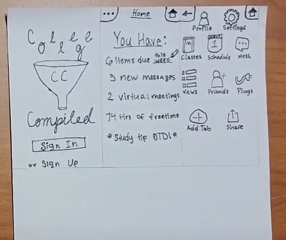

Problem Statement: Website Integration App

Numerous university goers are weighed down with an abundance of required apps/sites, several of which often do the same job but the utilization of them all is still necessary do to professors having a preference for a certain site etc. Our platform seeks to remedy the issue by creating a domain that’s sole purpose is to integrate these various sites into one easily traversable space.
Affinity Diagram: Website Integration App

Team Indesicive collaborated to think on the logistics of creating the app such as what we actually want it to look like and what sites it should include out of the gate. But also what we would need to do to make the concept a reality like webscrapping, API's and issues that may arise from that like TOS conflicts.
Persona: Website Integration App
The personas of three Website Integration App users, each detailing what a satisfied user of our product might look like, their backgrounds, and what features we could offer to better fulfill their consumer needs.
Storyboard: Website Integration App
Three storyboards that all show exactly how our product might be utilized to solve a common problem of our personas' daily lives from beginning to end, student and professor alike, to hopefully better understand our customers, their needs and how to better get our solution to the people.
Sketches: Website Integration App
Sketches depicting what the finished product might look like on different platforms; a mobiole app, as well as a website. We brainstormed layouts for the site and individual tabs that could be opened by the user, what they might include or allow them to do and even thought of a possible name for the company.
Paper Prototype: College Compiled
A paper walkthrough showcasing the functionality of the College Compiled app's main functions.
Hi-Fi Prototype: College Compiled

A fully functioning virtual prototype of the app, built using Proto.io.